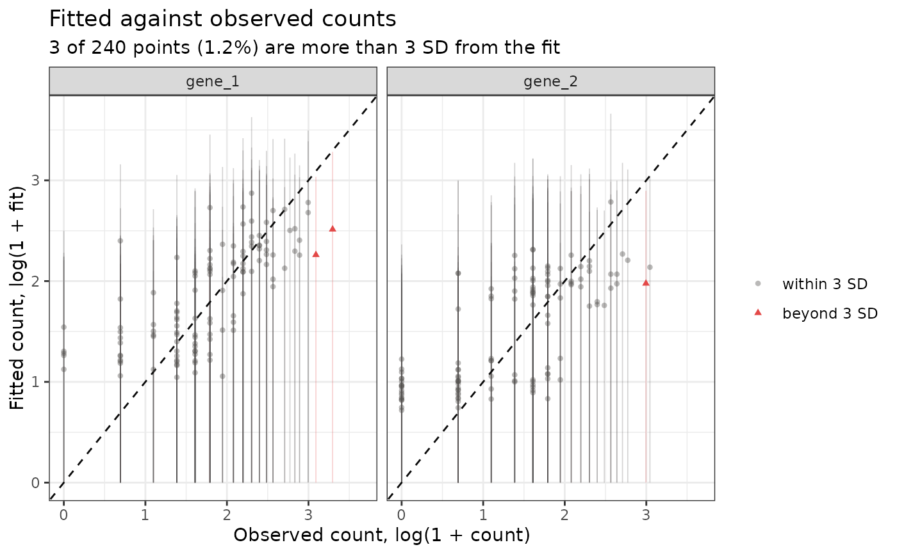

Plot the fitted count against the observed count
Source:R/plot_diagnostics.R
plot_fitted_vs_observed.RdA diagnostic of whether the over-dispersion accounts for how far the counts
lie from the fit. Each point is one cell and one gene. The x-axis is the
observed count \(A_{ji}\) and the y-axis the fitted count
\(m_{ji} = \ell_{ji}\mu_{ji}\), both drawn as \(\log(1 + \cdot)\), so a
count that equals its fit is on the line \(y = x\). Under the model
\(A_{ji}\) is negative binomial with mean \(m_{ji}\) and variance
\(m_{ji}(1 + \ell_{ji}/\beta_j)\), and a point is drawn in red when its
count is more than num_sd standard deviations from its fit.
Usage
plot_fitted_vs_observed(
input_obj,
bool_draw_bars = FALSE,
genes = NULL,
max_points = 50000,
num_sd = 3,
seurat_obj = NULL,
seed_number = 10
)Arguments
- input_obj
eSVDobject afterestimate_nuisance.- bool_draw_bars
If
TRUE, draw each point's bar. DefaultFALSE.- genes
NULL, for all the genes, or a character vector of genes, each drawn in its own panel with all of its cells.- max_points
When
genesisNULL, the largest number of points to draw. If there are more pairs of a cell and a gene than this, that many are sampled; the fitted count is computed for the sampled pairs only, so no cell-by-gene matrix is allocated.- num_sd
One positive number, the number of standard deviations beyond which a point is red.
- seurat_obj
NULL, or theSeuratobject the analysis was run on. Required wheninput_objhas no counts (it was built withbool_diet = TRUE); seerecompute_pvalue.- seed_number
Seed for the sample of pairs;
NULLleaves the random number stream alone.
Value
A ggplot object. Its data has one row per point and
columns cell, gene, observed, fitted,
sd, bool_outside (is the point red?), status (the
same, as the factor the legend is drawn from), and the coordinates
drawn: log_observed, log_fitted, log_lower and
log_upper (the ends of the bar). The share of red points is
mean(plot$data$bool_outside).
Details
With bool_draw_bars = TRUE each point carries a vertical bar, the
interval \(m_{ji} \pm\) num_sd standard deviations (truncated at
zero), drawn along the y-axis at the observed count. A point is red exactly
when its bar does not reach the line \(y = x\).
What to look for. The points should follow the line, and only a small
share should be red. With num_sd = 3, counts simulated from the
model and drawn with their true rates gave a share of 1 to 2 percent, more
than the 0.3 percent of a Gaussian because a count is skewed to the right.
A rate ten times too large gave about 5 percent, and a rate ten times too
small under 0.1 percent. So a larger share, or bars that are
systematically too short to reach the line, means the over-dispersion is
underestimated (the rate is too large), and bars that reach far past
the line with almost no red point mean it is overestimated. Points
that leave the line together, on one side, are a problem of the fit and
not of the over-dispersion.
The rate is nuisance_vec, the rate after the cap and before the
adjustments compute_posterior makes to it, and the library size is
the one estimate_nuisance used.
Examples
set.seed(10)
sim <- generate_null(cell_per_person = 15, num_genes = 40,
num_individuals = 8)
esvd_obj <- initialize_esvd(dat = sim$obs_mat,
covariates = sim$covariates,
metadata_individual = sim$metadata_individual,
case_control_variable = "CC",
bool_intercept = TRUE,
k = 2,
lambda = 0.1)
esvd_obj <- reparameterization_esvd_covariates(input_obj = esvd_obj,
fit_name = "fit_Init",
omitted_variables = "Log_UMI")
esvd_obj <- opt_esvd(input_obj = esvd_obj,
max_iter = 5,
offset_variables = setdiff(colnames(esvd_obj$covariates), "CC"),
fit_name = "fit_First",
fit_previous = "fit_Init")
esvd_obj <- reparameterization_esvd_covariates(input_obj = esvd_obj,
fit_name = "fit_First",
omitted_variables = "Log_UMI")
esvd_obj <- estimate_nuisance(input_obj = esvd_obj)
if(requireNamespace("ggplot2", quietly = TRUE)){
plot1 <- plot_fitted_vs_observed(input_obj = esvd_obj,
genes = colnames(sim$obs_mat)[1:2],
bool_draw_bars = TRUE)
plot(plot1)
mean(plot1$data$bool_outside)
}

#> [1] 0.0125